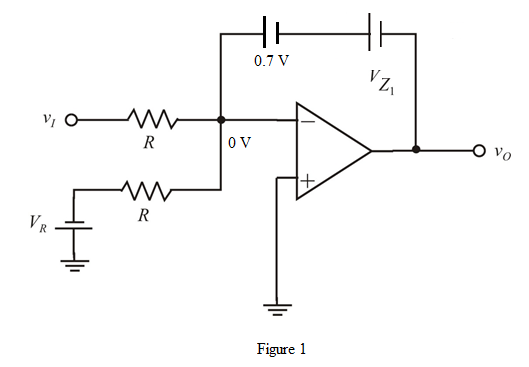
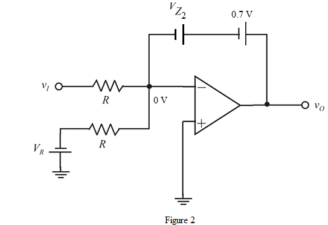
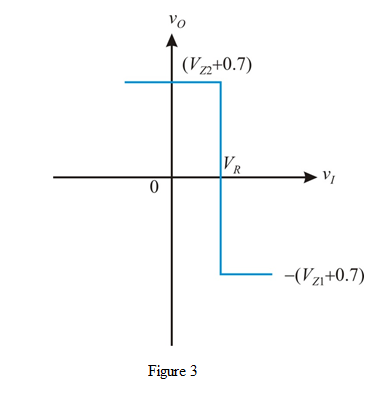
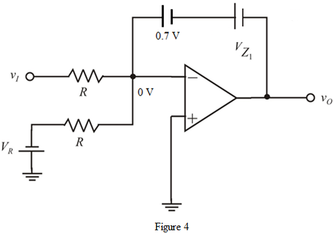
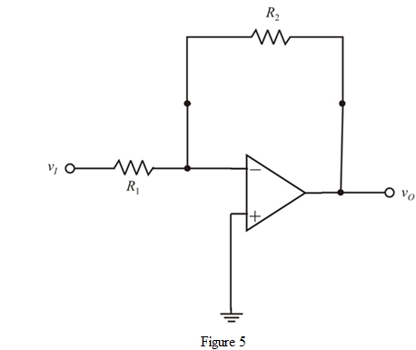
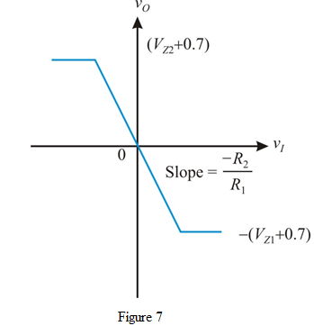

Step 1:
(a)
Refer to Figure P17.8 in the text book.
Consider the cases and .
Determine the output voltage expression for  .
.
The diode  is in forward bias and the diode is in reverse bias.
is in forward bias and the diode is in reverse bias.
Replace the diode with 0.7 V and replace the diode  with the zener voltage .
with the zener voltage .
Draw the equivalent circuit.

Step 2:
Apply Kirchhoff’s voltage law from the output terminal of op amp to the virtual ground.
Thus, the output voltage  expression for is .
expression for is .
Step 3:
Determine the output voltage expression for .
The diode  is in forward bias and the diode
is in forward bias and the diode  is in reverse bias.
is in reverse bias.
Replace the diode with 0.7 V and replace the diode  with the zener voltage.
with the zener voltage.
Draw the equivalent circuit.

Step 4:
Apply Kirchhoff’s voltage law from the output terminal of op amp to the virtual ground.
Thus, the output voltage  expression for
expression for  is .
is .
Step 5:
Draw the transfer characteristics.

Step 6:
(b)
Refer to Figure P17.8 (b) in the text book.
Consider the cases , and.
Determine the output voltage expression for.
The diode is in forward bias and the diode  is in reverse bias.
is in reverse bias.
Replace the diode  with 0.7 V and replace the diode
with 0.7 V and replace the diode  with the zener voltage .
with the zener voltage .
Draw the equivalent circuit.

Step 7:
Apply Kirchhoff’s voltage law from the output terminal of op amp to the virtual ground.

Thus, the output voltage expression for  is .
is .
Step 8:
Determine the output voltage for .
The diode  is in reverse bias, but not in break down condition and the diode.
is in reverse bias, but not in break down condition and the diode.
Replace the diode  with open circuit.
with open circuit.
Draw the equivalent circuit.

The circuit obtain in Figure 5 is a non-inverting op amp amplifier.
The expression for the output voltage is,
Step 9:
Determine the output voltage expression for.
The diode  is in forward bias and the diode
is in forward bias and the diode  is in reverse bias.
is in reverse bias.
Replace the diode  with 0.7 V and replace the diode
with 0.7 V and replace the diode  with the zener voltage.
with the zener voltage.
Draw the equivalent circuit.

Step 10:
Apply Kirchhoff’s voltage law from the output terminal of op amp to the virtual ground.
Thus, the output voltage  expression for
expression for  is .
is .
Step 11:
Draw the transfer characteristics.
